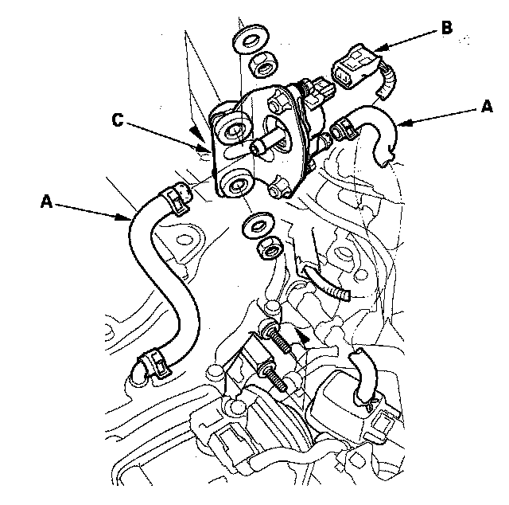
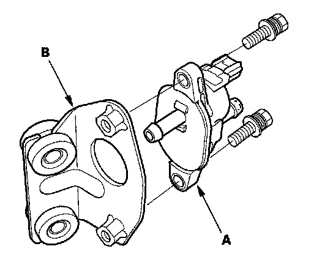

Canister Purge Control Valve: Service and Repair
EVAP Canister Purge Valve Replacement
1. Disconnect the hoses (A) and EVAP canister purge valve 2P connector (B).
2. Remove the EVAP canister purge valve and the bracket (C).

3. Remove the EVAP canister purge valve (A) from the bracket (B).
4. Install the parts in the reverse order of removal.